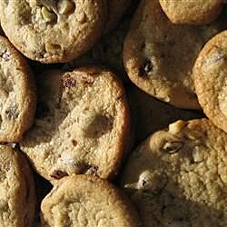

Chocolate Chip Cookies

Description
Chocolate chip cookies are a great treat among kids. Recipes for chocoalte
chip cookies have been passed down and modified but everybody.
I know that I love to have some cookies saved for Santa each year. And
they must be choclate chip.
Ingredients
- 1/2 cup butter, softened
- 1/2 cup shortening
- 3/4 cup packaged brown sugar
- 3/4 cup white sugar
- 2 eggs
- 1 teaspoon vanilla extract
- 1 tablespoon coffee-flavored liqueur
- 2 cups all-purpose flour
- 1 teaspoon salt
- 2 cups rolled oats
- 2 cups semisweet choclate chips
- 1 cup chopped walnuts
Steps
- Preheat oven to 375 degrees F (190 degrees C). Grease cookie sheets.
- In a large bowl, cream together the shortening, butter, brown sugar, and white sugar until smooth. Beat in the eggs one at a time, then stir in the vanilla and coffee liqueur. Combine the flour, baking soda, and salt; stir into the sugar mixture. Mix in the oats, chocolate chips, and walnuts. Roll tablespoonfuls of dough into balls, and place them 2 inches apart onto the prepared cookie sheets.
- Bake for 10 to 12 minutes in the preheated oven, or until golden. Cool on a wire rack for a few minutes before eating!